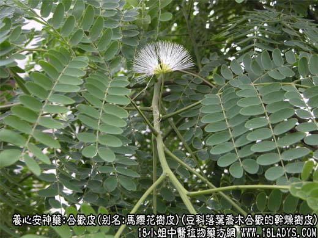
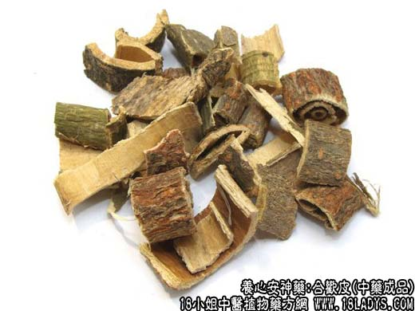
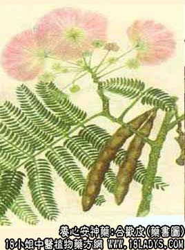

合欢皮为常用中药，始载《神农本草经》，列为中品。
别名：马缨花树皮。
来源：为豆科植物落叶乔木合欢的干燥树皮，野生或栽培。
产地：主产于湖北、江苏、浙江、安徽等省，其他各省多有分布。
性状鉴别：合欢皮呈长条细筒状或半筒状，多截断成长30厘米左右的段，厚1~3毫米。表面略粗糙，灰绿色或灰棕色；有纵形裂纹和散在皮孔，均呈红棕色。内表面淡黄色略平滑，有细密的纵丝纹。质硬而脆，易折断，断面亦淡黄色。气微，味微涩，稍有舌感。以皮薄条匀，无栓皮，内面黄白色者为佳。
主要成分：含合欢甙、鞣质等。
药理作用：解郁、活血、止痛，有强壮、兴、利尿、镇痛等作用。
炮制：切丝，生用。
性味：甘、平。
归经：入肝、心、脾经。
功能：安神、解郁、活血，止痛，续筋骨。
主治：心神不安，忧郁失眠，肺痈，筋骨损伤，痔漏疼痛。
临床应用：主要用于有失眠，抑郁、胸闷、胃呆的神经衰弱患者。可用合欢皮，配丹参、夜交藤、柏子仁等同服，方如合欢汤，有解郁作用（大致相当于兴奋大脑皮层），但因合欢皮气微力薄，需久服多服才能取效。
此外，也用于骨伤科，治跌打瘀肿作痛，尤适用于关节肌肉的慢性劳损性疼痛，取其有活血消肿止痛作用，配乳香、没药、木瓜、赤芍、红枣等，煎汤服；或以合欢皮研术，配白蔹局部外敷。
用量：9~30g
处方举例：合欢汤：合欢皮30g，丹参15g，夜交藤15g，柏子仁9，水煎服。
附：合欢共(夜合花)为合欢的干燥花。味甘，性平。具芳香气味。解郁宁神的作用较好，治抑郁不眠、兴奋不安，也可治兼有胃脘痛、气滞、胸闷者，常配白芍、柏子仁、龙齿等。用量3~9g。